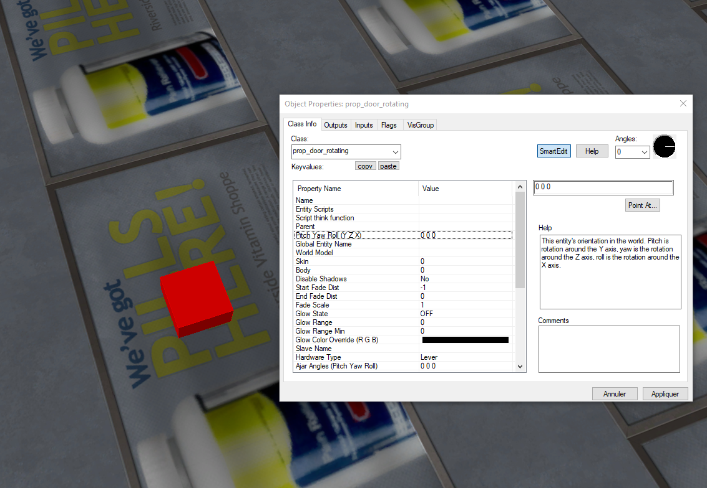
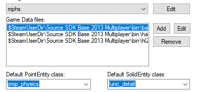

Entity Tool
Dans les entity tools, il existe plusieurs Class, nous allons décrire une parties d'entres elles
info_player_start
- Définie où le joueur va apparaître
Light
- Permettent de définir les lumières

Prop
Quand un prop est appliqué, on a un carré rouge qui s'affiche est une nouvelle fenêtre, sur cette nouvelle fenêtre, on a «World Model» qui permet de faire prendre une apparence au prop à partir de la bibliothèque des modèles 3D du jeu.
Nous avons plusieurs Props
Prop_Rotating_Door
- Ce prop permet de créer une porte, qui s'ouvre quand le joueur interagi avec.
Prop_physics
- Crée des modèles avec des propriétés physiques ce modèle peut aussi être brisé.
Prop_detail
- N'a pas de collision ni de propriété physique À utiliser pour les décors d'arrière-plan.
Prop_static
-
c'est un prop qui ne bouge pas, ils n'ont pas propiété physique sauf la collision.
-
ne peut pas avoir d'animation.
Ajouter une entité dans le répertoire de hammer
Pour ajouter une entité, nous allons créer un fichier .fdg avec sa nous pouvons ajouter notre entité écrit en C++ cf. Ajouter une entité
Ici pour ajouter une arme.
@PointClass base(Targetname, Angles, Origin) studio("path/model.mdl") = example_entity_name : "example entity description, visible in Hammers 'help' Box.
[
Property_name_1(string) : "Example String Name" : "Example" : "Keyvalue Description"
Property_name_2(integer) : "Example Interger Name" : 15 : "Keyvalue Description"
Property_name_3(float) : "Example Float Name" : "1.5" : "Keyvalue Description"
Property_name_4(boolean) : "Example Boolean Name" : 1 : "Keyvalue Description"
Property_name_5(choices) : "second number" : 0 : "Your choice of numbers!" =
[
0 : "Default"
1 : "Something"
2 : "Another Thing"
]
spawnflags(flags) =
[
1 : "A flag" : 0 // 0 means the flag isn't ticked by default
2 : "Another flag" : 1 // 1 means the flag is ticked by default
]
// Inputs
input DoSomething(void) : "Do something"
// Outputs
output OnSomethingHappened(void) : "Fires when something happens"
output OnSomethingElse(void) : "Fires when something else happens"
]
Ici pour ajouter un prop.
Ajouter le fichier .fdg dans les Data files de Hammer.
